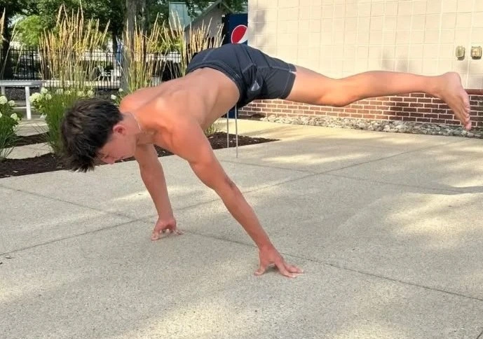

Calisthenics training system
My Approach
A practical push, pull, legs calisthenics framework for building strength, control, skill, and consistency at your current level.
Use the beginner or advanced split based on your current strength, skill level, and ability to recover. Repeat the Push, Pull, Legs split 1-2 times per week depending on what you can recover from.
For each exercise, rest 1-3 minutes. Start the next set when you feel ready mentally and physically, not just when a timer tells you to move.
Keep the routines as written, scale the regressions when needed, and prioritize clean reps over rushing through the workout.
Choose your level
Begin with the beginner plan if you are still building control. Move to the advanced plan when the listed skills and volumes are realistic.
Recover first
Run Push, Pull, Legs 1-2 times weekly based on recovery. More is only better if performance and joints are holding up.
Use tutorials
Video tutorials are included for key skill movements so you can understand the standards before loading intensity.
Beginner calisthenics workout
Repeat the Push, Pull, Legs split 1-2 times a week based on what you can recover from. Rest 1-3 minutes per exercise depending on readiness.
Push
Warm up
- Jumping jacks — 60 seconds.
- Arm circles — 20 forward and 20 back.
- Wrist circles — 15 each direction.
- Scapular pushups — 2 × 10.
- Band external rotations — 2 × 12.
Main workout
- Push-ups — 3 sets of 8-15 reps; use knees if too difficult.
- Pike push-ups — 3 sets of 6-12 reps; do pike holds if too difficult.
- Chest-to-wall handstand holds — 3 sets of 15-30 seconds; protract your scapula, turn elbows in, and squeeze glutes and core.
- Bench dips or assisted dips — 3 sets of 8-12 reps; use dip negatives if too difficult.
- Planche leans — 3 sets of 10-20 seconds; protract your scapula, turn elbows in, and squeeze glutes and core.
Cool down
- Doorway chest stretch — 30 seconds.
- Overhead triceps stretch — 30 seconds each arm.
- Cross-body shoulder stretch — 30 seconds each arm.
- Wrist flexor stretch — 30 seconds each side.
- Wrist extensor stretch — 30 seconds each side.
Pull
Warm up
- Jumping jacks — 60 seconds.
- Arm circles — 20 forward and 20 backward.
- Scapular pull-ups — 2 × 8.
- Dead hang — 20-30 seconds.
- Band pull-aparts — 2 × 15.
Main workout
- Pullups — 3 sets of 4-8 reps; use assistance or negatives if too difficult.
- Inverted rows — 3 sets of 8-12 reps; flare out the elbows.
- Tuck front lever holds — 2 sets of 7-15 seconds.
- Chin-ups — 2 sets of 5-9 reps; use assistance or negatives if too difficult.
- Supermans — 3 sets of 10-15 reps.
Cool down
- Overhead lat stretch — 30 seconds each side.
- Doorway biceps stretch — 30 seconds each arm.
- Cross-body shoulder stretch — 30 seconds each arm.
- Upper trapezius stretch — 30 seconds each side.
- Wrist flexor stretch — 30 seconds each side.
Legs
Warm up
- Jumping jacks — 60 seconds.
- Leg swings front-to-back — 10 reps each leg.
- Leg swings side-to-side — 10 reps each leg.
- Bodyweight squats — 2 sets of 10 reps.
- Glute bridges — 2 sets of 12 reps.
Main workout
- Reverse nordics — 3 sets of 4-6 reps.
- Split squats — 3 sets of 8-12 reps.
- Bodyweight squats — 2 sets of 15-20 reps.
- Single-leg Romanian deadlifts — 3 sets of 6-8 reps; hold onto something if too difficult. Go slowly and get a deep stretch at the bottom.
- Single-leg calf raises — 3 sets of 10-15 reps; get a full deep stretch at the bottom. Use both legs if too difficult.
Cool down
- Standing hamstring stretch — 30 seconds each leg.
- Kneeling hip flexor stretch — 30 seconds each leg.
- Standing quadriceps stretch — 30 seconds each leg.
- Standing calf stretch — 30 seconds each leg.
- Figure four glute stretch — 30 seconds each leg.
Advanced calisthenics workout
Repeat the Push, Pull, Legs split 1-2 times a week based on what you can recover from. Rest 1-3 minutes per exercise depending on readiness.
Push
Warm up
- Jumping jacks — 60 seconds.
- Arm circles — 20 forward and 20 back.
- Wrist circles — 15 each direction.
- Scapular pushups — 2 sets of 10 reps.
- Band external rotations — 2 sets of 12 reps.
Main workout
- 90° handstand pushups — 3 sets of 1-4 reps; straddle your legs or only do the negative if too difficult.
- Planche press negatives — 2 sets of 4-6 reps; if too easy do tuck planche presses. Keep scapula protracted and arms straight the whole time.
- Chest-to-wall handstand pulls — 3 sets of 6-10 reps; protract your scapula, turn elbows in, and squeeze glutes and core.
- Elevated and supinated planche leans — 3 sets of 15-20 seconds; protract your scapula, turn elbows in, and squeeze glutes and core.
- Handstand pushups — 2 sets of 3-6 reps; protract your scapula, turn elbows in, and squeeze glutes and core.
- Dips — 3 sets of 15-25 reps using parallel bars.
Cool down
- Doorway chest stretch — 30 seconds.
- Overhead triceps stretch — 30 seconds each arm.
- Cross-body shoulder stretch — 30 seconds each arm.
- Wrist flexor stretch — 30 seconds each side.
- Wrist extensor stretch — 30 seconds each side.
Pull
Warm up
- Jumping jacks — 60 seconds.
- Arm circles — 20 forward and 20 backward.
- Scapular pull-ups — 2 × 8.
- Dead hang — 20-30 seconds.
- Band pull-aparts — 2 × 15.
Main workout
- Explosive pullups — 2 sets of 6-8 reps; keep reps low and pull as hard and fast as you can.
- Pullups — 2 sets of 12-16 reps with controlled full range of motion.
- Front lever banded holds — 3 sets of 12-18 seconds; keep good form, locked-out arms, retracted scapula, and hips up. If too difficult, hold in straddle or half lay.
- Ice cream makers — 2 sets of 6-8 reps; keep good front lever form. If too difficult, do them in straddle or half lay.
- Muscle ups — 2 sets of 2-4 reps with limited swinging and kipping.
- Inverted rows with feet elevated — 3 sets of 12-20 reps; keep elbows flared and retract your scapula in the rep.
Cool down
- Overhead lat stretch — 30 seconds each side.
- Doorway biceps stretch — 30 seconds each arm.
- Cross-body shoulder stretch — 30 seconds each arm.
- Upper trapezius stretch — 30 seconds each side.
- Wrist flexor stretch — 30 seconds each side.
Legs
Warm up
- Jumping jacks — 60 seconds.
- Leg swings front-to-back — 10 reps each leg.
- Leg swings side-to-side — 10 reps each leg.
- Bodyweight squats — 2 sets of 10 reps.
- Glute bridges — 2 sets of 12 reps.
Main workout
- Reverse nordics — 3 sets of 8-10 reps; use a slow controlled negative and go all the way down if you can.
- Sissy squats — 2 sets of 13-16 reps; keep hips up and go all the way down. Hold onto something for support if too difficult.
- Pistol squats — 2 sets of 8-12 reps; go all the way down and hold onto something for support if too difficult.
- Nordics — 3 sets of 6-10 reps with a slow controlled negative. If too easy, do the complete eccentric and concentric rep.
- Single-leg calf raises — 3 sets of 15-25 reps; get a full deep stretch at the bottom of the rep.
Cool down
- Standing hamstring stretch — 30 seconds each leg.
- Kneeling hip flexor stretch — 30 seconds each leg.
- Standing quadriceps stretch — 30 seconds each leg.
- Standing calf stretch — 30 seconds each leg.
- Figure four glute stretch — 30 seconds each leg.
Video tutorials
Watch these tutorials before attempting the higher-skill movements so your setup and execution are clear.
Reverse nordics
Form tutorial for reverse nordics.
Watch tutorial
Sissy squat
Form tutorial for sissy squats.
Watch tutorial
90° handstand push-up
Form tutorial for 90° handstand push-ups.
Watch tutorial
Planche press negative
Form tutorial for planche press negatives.
Watch tutorial
Ice cream makers
Form tutorial for ice cream makers.
Watch tutorial
Chest-to-wall handstand pulls
Form tutorial for chest-to-wall handstand pulls.
Watch tutorial
Master the basics, progress when your form is ready, and let consistent sessions stack up.